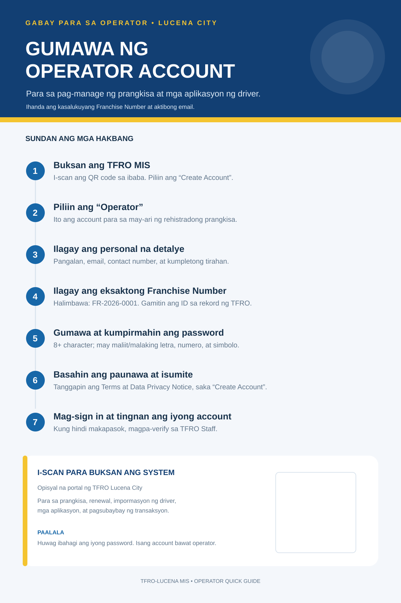
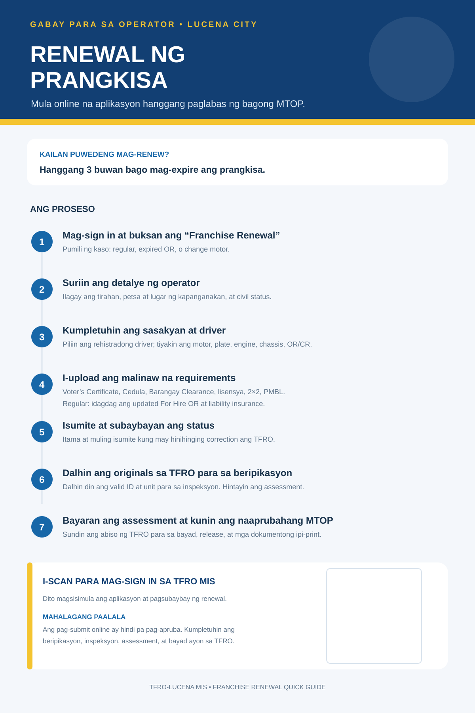

Mga Gabay para sa Operator
Mga infographic sa Tagalog para sa TFRO Lucena City MIS.


Tip: Piliin ang “I-print / I-save bilang PDF” upang makagawa ng dalawang pahinang printable na kopya.
1. Paggawa ng operator account

2. Renewal ng prangkisa
